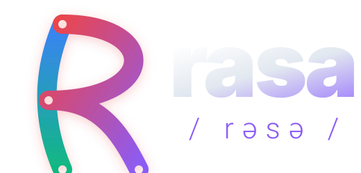

Rasa previews for a portable runtime.
Static previews of the Rasa WebAssembly runtime, structured compiler artifacts, and browser extension model. Release notes, tutorials, and installation paths will arrive with the release; this site provides the current public preview surface.
One shared Rasa Wasm engine is served from this site and loaded by each demo. The demos are browser-only; no server computes language data.
Browser inspection workbench
Inspect Rasa reader, analysis, facts, plan evidence, diagnostics, and runtime data from the browser-targeted Wasm artifact.
Model architecture explorer
Load small TensorFlow.js models through explicit Rasa forms, then inspect layer graphs, model handles, parameter counts, and weight aggregates in-browser.